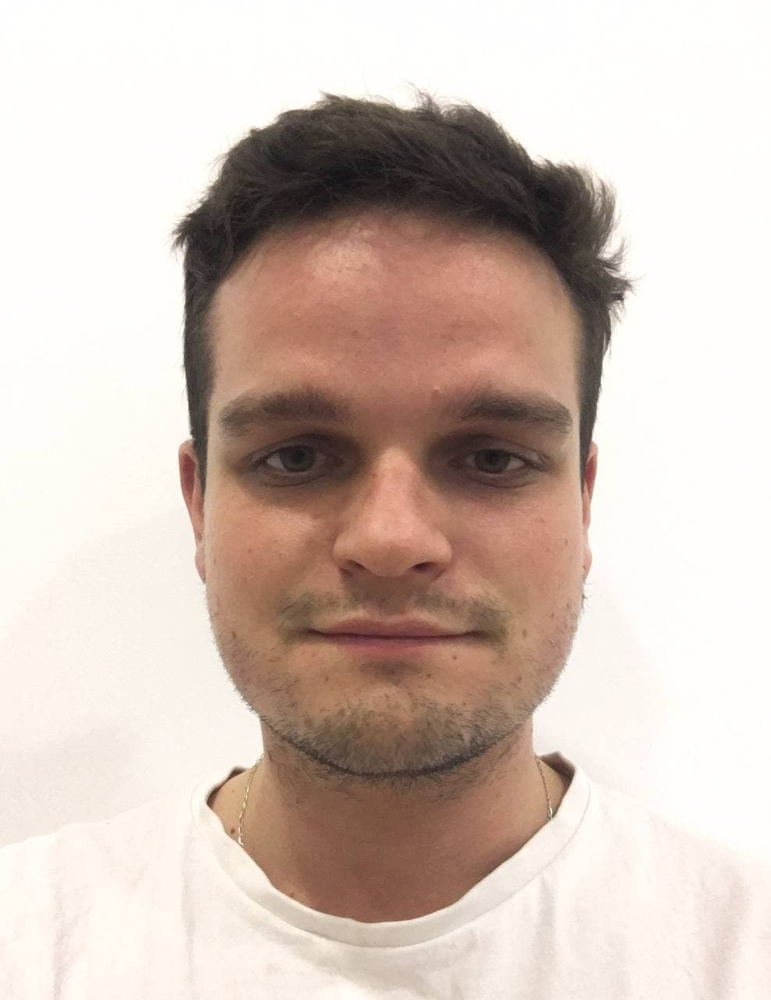

Антон Плюта. Дизайнер интерфейсов (веб, мобайл).
Мои навыки
Привет! На протяжении 2-х лет я занимаюсь дизайном интерфейсов. Имею техничесский бекграунд и опыт работы с веб-иллюстрацией. Я могу создавать интерфейсы для информационных сайтов, интернет-магазинов, мобильных приложения, панелей управления, веб и мобильных сервисов любых типов.
- провести интервью с заказчиком и узнать ключевые требования к проекту.
- сформировать целевую аудиторию.
- провести опрос и интервью с пользователями.
- составить персоны пользователей.
- использовать JTBD и HMW для обозначения необходимых задач и поиску их решения.
- нарисовать CJM на основе сформированных персон пользователей.
- провести конкурентный анализ.
- сформировать алгоритм работы продукта используя блок-схемы.
- нарисовать User flow продукта.
- нарисовать lo-fi и hi-fi прототипы.
- анимировать интерфейсы используя After Effects, Principle или Figma.
- провести юзабилити тесторование прототипов на пользователях.
- составить UI-кит или использовать чужой.
- использовать компоненты, автолейауты, фреймы, привязки(constraints) и грамотно работать с ними в Figma.
- подготавливать макеты для разработки в Figma.
- делать адаптивные версии макета учитывая все особенности устройства.
Мои hard скилы
- Умею заговорить с кем угодно, о чем угодно, но только когда это необходимо.
- Умею понять людей разных типов и их мотивацию.
- Умею презентовать и защитить своё мнение.
- Могу убеждать людей в своих решениях, и не поддаваться на давление.
- Могу взаимодействовать с клиентом, разработчикам и иллюстраторами.
- Приходилось решать конфликтные ситуации при создании продукта.
- Стараюсь всегда учиться и следить за новинками, но не гнаться за ними.
Мои soft скилы
- английский на уровне уверенного письменного и неуверенного устного общения.
- техничесскую сторону работы сайтов, веб-приложений и мобильных приложений.
- основные принципы дизайн мышления и дизайн спринтов.
- принципы HIG и Material design.
- как работать с цветами, композицией и типографикой
- как и где получить необходимые знания для работы.
Я знаю:
- работать с командой таких же интузиастов как и я.
- создавать удобные сервисы которые решают проблемы людей.
- быть частью компании, которая заинтересована в моем проффесиональном развитии.
- работать над проектом от А до Я.
- получить регулярный фидбек о своей работе.
- возможность ходить в офис, но иногда работать удаленно.
- иметь фиксированный график работы.
Я хочу:
Задачи, которые я решал
UI\UX дизайн. Мобильное приложение Viteye.
Август 2021 - Октябрь 2021
Viteye - это сервис для диагностирования злокачественных образований на коже (меланомы) с помощью камеры смартфора и дерматоскопа.
На данный момент была закончена робота по клиентской части сервиса. В будушем планируеться создать приложение для докторов, администраторов, оформление подписки, и Landing page для продукта.
- Исследование рынка и формирование целевой аудитории.
- Исследование необходимых сценариев пользователей.
- Создание функциональной карты приложения.
- Создание lo-fi, hi-fi прототипов.
- Создание доски настроения
- Создание интерактивных прототипов и финального макета в Figma.
UI\UX дизайн, разработка на Tilda. Интернет-магазин для украинского бренда одежды Tserkovnij.
Апрель 2021 - Август 2021
Tserkovnij - бренд одежды одного человека, идеи которого мне очень близки. А именно минимализм и функциональность. Работа с Сашей не только была гладкой и понятной для нас обоих, но и вдохновила меня на новые идеи. Я считаю, что данный проект помог в формировании мох принципов в дизайне.
Tserkovnij нуждался в инструменте для продаж и порталом для публикации новостей, хранение архивных фото и публикации истории создания некоторых изделий.
- Интервью с заказчиком и выяснение ключевых задач.
- Анализ рынка и конкурентов.
- Опрос пользователей целевой аудитории.
- Создание персон пользователей.
- Использовал метод How Might We для выяснения решений ключевых потребностей пользователей.
- Создание доски настроения будущего дизайна.
- Создание lo-fi, hi-fi прототипов.
- Создание финального макета и разработка сайта на Tilda.
- Юзабилити тестирования на beta-версии готового сайта.
Jobbrs, UI\UX designer
Март 2021 - Июль 2021
В марте 21 года мне написала HR компании Jobbrs на дрибл с предолжением работы. На протяжении 5 месяцев я трудился, выполняя разноплановые задачи в сфере дизана интерфейсов, а именно:
- Дизайн с нуля и доработка дизайна сайтов, панелей управления и приложений.
- UX анализ готового дизайна, и формирования рекомендаций для его усовершенствования.
- Создания с нуля панелей управлений, приложений до стадии hi-fi прототипа.
- Работа с чужими и создание своих UI-китов.
Большую часть проектов я выполнял один. Но иногда нас обьеденяли в небольшие команды из дизайнеров и менеджеров, где мы вместе работали над задачами.
Web design
Декабрь 2019 - Март 2021
На протяжении 2020 года я делал много лендингов и небольших сайтов, которые я хочу обьеденить в один проффесиональный отрезок.
- Создание прототипов и макетов лендингов.
- Верстка сайтов.
- Дизайн веб-приложения для сбора отзывов и его верстка.
- Создание векторной анимации в After Effects и её интеграция на сайт с помощью Lottie.
- Создание векторной графики и анимаций.
Большую часть проектов я выполнял один. Но иногда нас обьеденяли в небольшие команды из дизайнеров и менеджеров, где мы вместе работали над задачами.